Ի՞նչ առավելագույն հեռավորության վրա է տեղադրվում բարդ խաչմերուկներում «խաչմերուկի տարածք» ճանապարհային նշանը, եթե այն հնարավոր չէ տեղադրել խաչմերուկի սահմանին:
Answer: 30 մետր
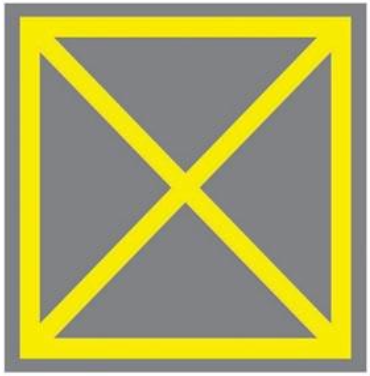
Question 379MISMATCHBook 4score 7 / 2nd 11
Ինչի՞ մասին է զգուշացնում հետևյալ ճանապարհային նշանը:
Answer: Արգելվում է մուտք գործել խաչմերուկի տարածք, եթե առջևում՝ երթևեկության ուղղությամբ առաջացել է խցանում, որը վարորդին կ հարկադրի կանգ առնել:
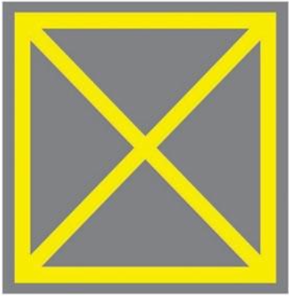
Question 380WARNBook 4score 13 / 2nd 13
Ի՞նչ է ցույց տակիս հետևյալ ճանապարհային գծանշումը:
Answer: Խաչմերուկի հատված, որտեղ արգելվում է մուտք գործել, եթե առջևում՝ երթևեկության ուղղությամբ առաջացել է խցանում, որը վարորդին կ հարկադրի կանգ առնել:
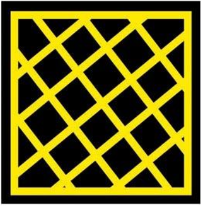
Question 484WARNBook 5score 373 / 2nd 373
Խաչմերուկը վերջինը կանցնի՝
Answer: Կանաչ ավտոմոբիլը։
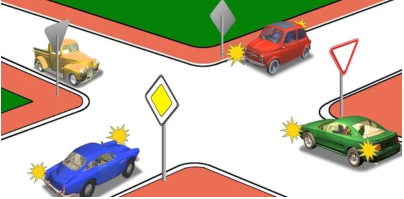
Question 486WARNBook 5score 373 / 2nd 373
Խաչմերուկն առաջինը կանցնի՝
Answer: Կարմիր ավտոմոբիլը։
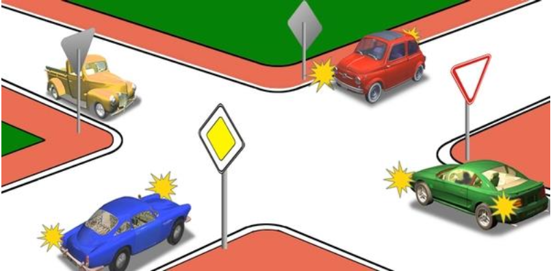
Question 491WARNBook 5score 174 / 2nd 317
Խաչմերուկն առաջինը կանցնի՝
Answer: Կանաչ ավտոմոբիլը։
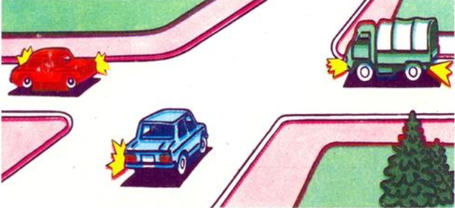
Question 496WARNBook 5score 402 / 2nd 402
Կարմիր ավտոմոբիլը՝
Answer: Պետք է ճանապարհը զիջի շրջանաձեւ երթեւեկությամբ ճանապարհով երթեւեկող կապույտ ավտոմոբիլին։
Answer: Տրամվայը, ավտոմոբիլը եւ ավտոբուսը միաժամանակ։
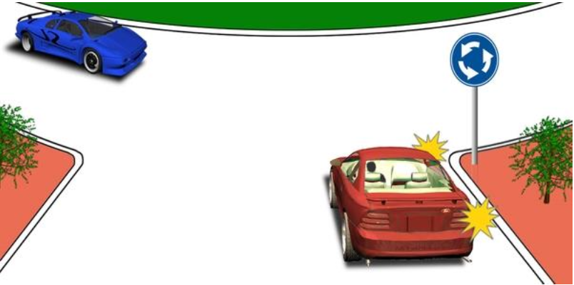
Question 598WARNBook 5score 414 / 2nd 409
Այս խաչմերուկում
Answer: Կանցնեք առաջինը
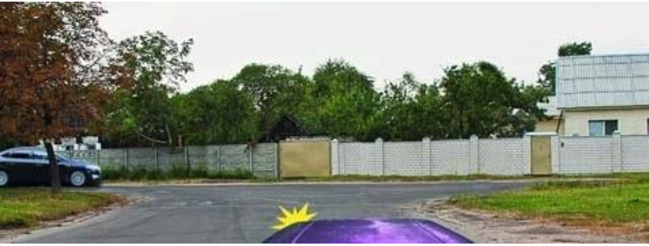
Question 617WARNBook 6score 396 / 2nd 396
Երթեւեկությունը թույլատրվում է՝
Answer: Դեպի աջ՝ առաջին անցումով։
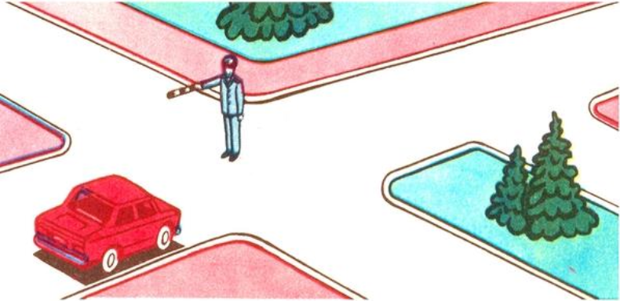
Question 618WARNBook 6score 389 / 2nd 389
Երթեւեկությունը թույլատրվում է՝
Answer: Դեպի աջ՝ առաջին անցումով։
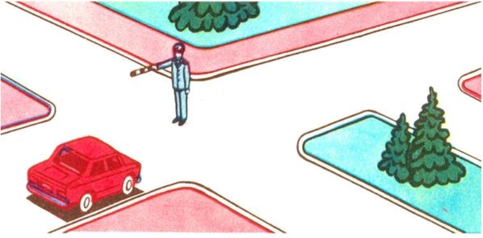
Question 626MISMATCHBook 6score 1 / 2nd 4
Պարտավո՞ր է արդյոք տրամվայի վարորդը լուսացույցի կանաչ ազդանշանի դեպքում զիջել ճանապարհն այլ ուղղություններից մոտեցող տրանսպորտային միջոցներին։
Answer: Պարտավոր է։
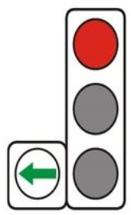
Question 634WARNBook 6score 13 / 2nd 7
Այս լուսացույցի կարմիր ազդանշանի դեպքում երթեւեկությունն արգելվում է՝
Answer: Այն գոտիով, որի վերեւում տեղակայված է։
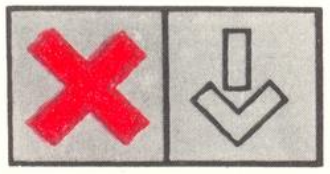
Question 706MISMATCHBook 7score 0 / 2nd 0
Թույլատրվու՞մ է արդյոք ուղեւոր իջեցնել ճանապարհի այն տեղում, որտեղ եզրաքարի վերին մակերեսին գծված է դեղին հոծ գիծ եւ տեղադրված է «Կանգառն արգելվում է» նշանը։
Answer: Արգելվում է։
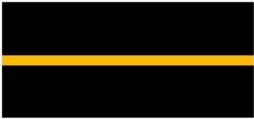
Question 715MISMATCHBook 7score 0 / 2nd 0
Ի՞նչ է ցույց տալիս հորիզոնական գծանշման դեղին հոծ գիծը։
Answer: Այն տեղը, որտեղ արգելվում է տրանսպորտային միջոցների կանգառը եւ կայանումը։
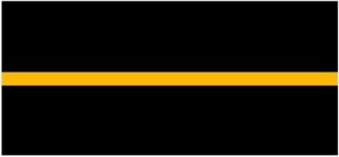
Question 718MISMATCHBook 7score 8 / 2nd 9
Ի՞նչ է ցույց տալիս այս գծանշումը։
Answer: Այն տեղը, որտեղ հեծանվային արահետը հատում է ճանապարհի երթեւեկելի մասը։
Question 719MISMATCHBook 7score 0 / 2nd 0
Քանի՞ գոտի ունի ճանապարհը, որտեղ հանդիպակաց ուղղությունների տրանսպորտային հոսքերը բաժանվում են կրկնակի հոծ գծերով։
Answer: Չորս եւ ավելի գոտիներ։
Question 722MISMATCHBook 7score 0 / 2nd 0
Որտե՞ղ է գծվում կանգառը եւ կայանումն արգելող տեղերը նշող դեղին հոծ գիծը։
Answer: Երթեւեկելի մասի եզրի մոտ կամ եզրաքարի վերին մակերեսին։
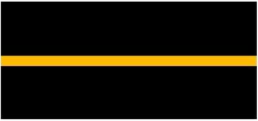
Question 723WARNBook 7score 23 / 2nd 9
Ճանապարհային նշաններից որի՞ հետ կարող է կիրառվել դեղին գույնի ընդհատվող գծանշումը։
Answer: «Կայանելն արգելվում է»։
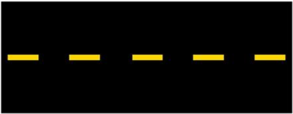
Question 725MISMATCHBook 7score 11 / 2nd 12
Այս ճանապարհային գծանշումն ունի հետեւյալ նշանակությունը։
Answer: Ցույց է տալիս ընդհանուր օգտագործման տրանսպորտային միջոցների կանգառի կետերը եւ տաքսիների կայանման վայրերը։
Question 726MISMATCHBook 7score 8 / 2nd 11
Այս հորիզոնական ճանապարհային գծանշումը ցույց է տալիս՝
Answer: Այն տեղը, որտեղ վարորդը պետք է անհրաժեշտության դեպքում կանգ առնի` հատվող ճանապարհով երթեւեկող տրանսպորտային միջոցներին ճանապարհը զիջելու համար։
Question 729MISMATCHBook 7score 7 / 2nd 16
Ի՞նչ է ցույց տալիս այս գծանշումը։
Answer: Այն տեղը, որտեղ հեծանվային արահետը հատում է ճանապարհի երթեւեկելի մասը։
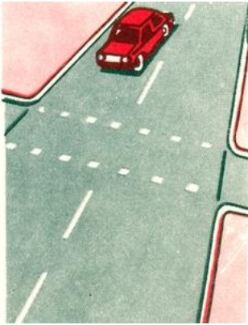
Question 730MISMATCHBook 7score 10 / 2nd 12
Վարորդը որտե՞ղ պետք է կանգնեցնի տրանսպորտային միջոցն այս գծանշման առկայության դեպքում։
Answer: Գծանշման մոտ։
Question 731WARNBook 7score 12 / 2nd 12
Ի՞նչ է նշանակում այս գծանշումը։
Answer: Ցույց է տալիս երթեւեկության այն գոտիների սահմանները, որտեղ իրականացվում է դարձափոխային կարգավորում։
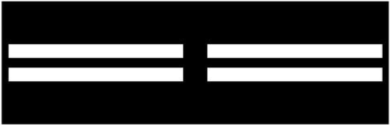
Question 747WARNBook 7score 17 / 2nd 9
Ո՞ր պատասխանում են ճիշտ թվարկած կանգառի կանոնները խախտած վարորդները։
Answer: Բոլոր տրանսպորտային միջոցների վարորդները։
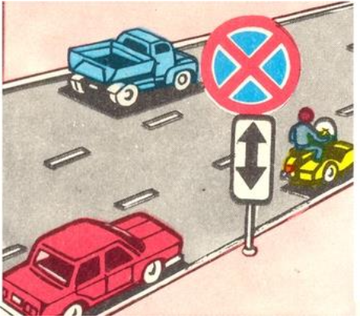
Question 886MISMATCHBook 8score 1 / 2nd 6
Այս նշանի առկայության դեպքում ի՞նչ առավելագույն արագությամբ երթեւեկելու իրավունք ունեն միջքաղաքային ավտոբուսների վարորդները։
Answer: 90 կմ/ժ։
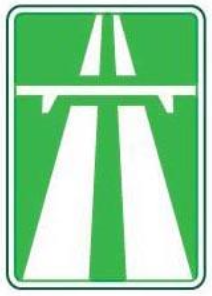
Question 890WARNBook 8score 20 / 2nd 23
Այս նշանով կահավորված ճանապարհներին միջքաղաքային ավտոբուսների վարորդներն իրավունք ունեն երթեւեկելու ոչ ավելի քան`
Answer: 60 կմ/ժ արագությամբ։
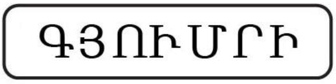
Question 896MISMATCHBook 8score 2 / 2nd 5
Ի՞նչ առավելագույն արագությամբ է թույլատրվում ավտոբուսի երթեւեկությունը այս ճանապարհային նշանի ազդեցության ճանապարհահատվածներում։
Answer: 90 կմ/ժ։
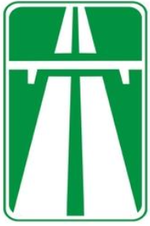
Question 899MISMATCHBook 8score 1 / 2nd 4
Ի՞նչ առավելագույն արագությամբ է թույլատրվում թեթեւ մարդատար ավտոմոբիլների երթեւեկությունը այս ճանապարհային նշանի ազդեցության ճանապարհահատվածներում։